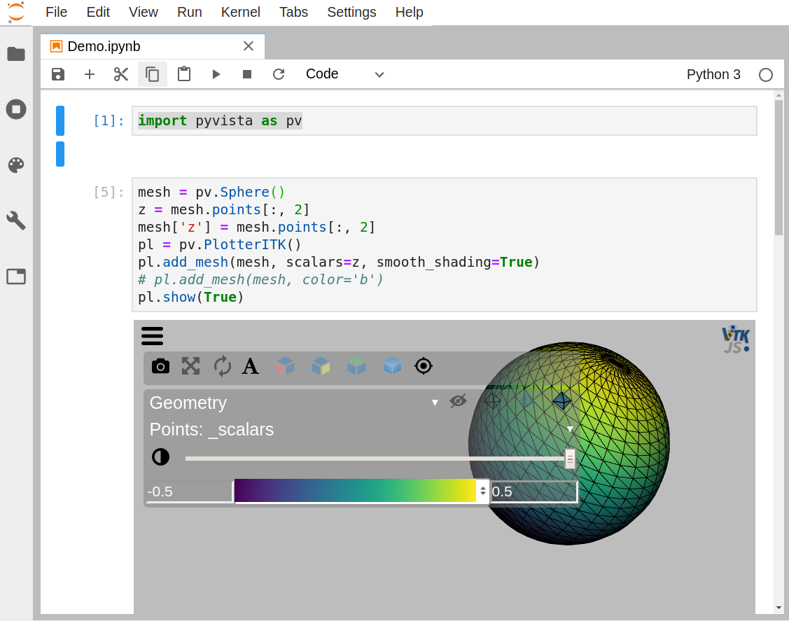

PyVista Jupyter Notebook Integration¶
PyVista has an interface for visualizing plots in Jupyter. The
pyvista.PlotterITK class allows you interactively visualize a mesh
within a jupyter notebook. For those who prefer plotting within
jupyter, this is an great way of visualizing using VTK and
pyvista.
Special thanks to thewtex .. _itkwidgets: https://github.com/InsightSoftwareConsortium/itkwidgets
Installation¶
To use PlotterITK you’ll need to install itkwidgets>=0.25.2.
Follow the installation steps here:
.. _itkwidgets: https://github.com/InsightSoftwareConsortium/itkwidgets#installation
You can install everything with pip if you prefer not using conda, but be sure your juptyerlab is up-to-date. If you encounter problems, uninstall and reinstall jupyterlab using pip.
Example Plotting with ITKwidgets¶
The following example shows how to create a simple plot that shows a simple sphere.
import pyvista as pv
# create a mesh and identify some scalars you wish to plot
mesh = pv.Sphere()
z = mesh.points[:, 2]
# Plot using the ITKplotter
pl = pv.PlotterITK()
pl.add_mesh(mesh, scalars=z, smooth_shading=True)
pl.show(True)
{kind=link}

ITKwidgets with pyvista¶
For convenience, figures can also be plotted using the plot_itk function:
import pyvista as pv
# create a mesh and identify some scalars you wish to plot
mesh = pv.Sphere()
z = mesh.points[:, 2]
# Plot using the ITKplotter
pv.plot_itk(mesh, scalars=z)
Additional binder examples can be found at:
Attributes
Methods
|
Add an actor to the plotter. |
|
Add a PyVista/VTK mesh or dataset. |
|
Add points to plotting object. |
|
Show itkwidgets plotter in cell output. |
-
class
pyvista.PlotterITK(**kwargs)¶ Bases:
objectITKwidgets plotter.
Used for plotting interactively within a jupyter notebook. Requires
itkwidgets>=0.25.2. For installation see:https://github.com/InsightSoftwareConsortium/itkwidgets#installation
Examples
>>> import pyvista >>> mesh = pyvista.Sphere() >>> pl = pyvista.PlotterITK() >>> pl.add_mesh(mesh, color='w') >>> pl.show()
-
add_actor(actor)¶ Add an actor to the plotter.
- Parameters
uinput (vtk.vtkActor) – vtk actor to be added.
-
add_mesh(mesh, color=None, scalars=None, opacity=1.0, smooth_shading=False)¶ Add a PyVista/VTK mesh or dataset.
Adds any PyVista/VTK mesh that itkwidgets can wrap to the scene.
- Parameters
mesh (pyvista.Common or pyvista.MultiBlock) – Any PyVista or VTK mesh is supported. Also, any dataset that
pyvista.wrap()can handle including NumPy arrays of XYZ points.color (string or 3 item list, optional, defaults to white) – Use to make the entire mesh have a single solid color. Either a string, RGB list, or hex color string. For example:
color='white',color='w',color=[1, 1, 1], orcolor='#FFFFFF'. Color will be overridden if scalars are specified.scalars (str or numpy.ndarray, optional) – Scalars used to “color” the mesh. Accepts a string name of an array that is present on the mesh or an array equal to the number of cells or the number of points in the mesh. Array should be sized as a single vector. If both
colorandscalarsareNone, then the active scalars are used.opacity (float, optional) – Opacity of the mesh. If a single float value is given, it will be the global opacity of the mesh and uniformly applied everywhere - should be between 0 and 1. Default 1.0
smooth_shading (bool, optional) – Smooth mesh surface mesh by taking into account surface normals. Surface will appear smoother while sharp edges will still look sharp. Default False.
-
add_points(points, color=None)¶ Add points to plotting object.
- Parameters
points (np.ndarray or pyvista.Common) – n x 3 numpy array of points or pyvista dataset with points.
color (string or 3 item list, optional. Color of points (if visible)) –
Either a string, rgb list, or hex color string. For example:
color=’white’ color=’w’ color=[1, 1, 1] color=’#FFFFFF’
-
show(ui_collapsed=False)¶ Show itkwidgets plotter in cell output.
- Parameters
ui_collapsed (bool, optional) – Plot with the user interface collapsed. UI can be enabled when plotting. Default False.
- Returns
plotter – ITKwidgets viewer.
- Return type
itkwidgets.Viewer
-